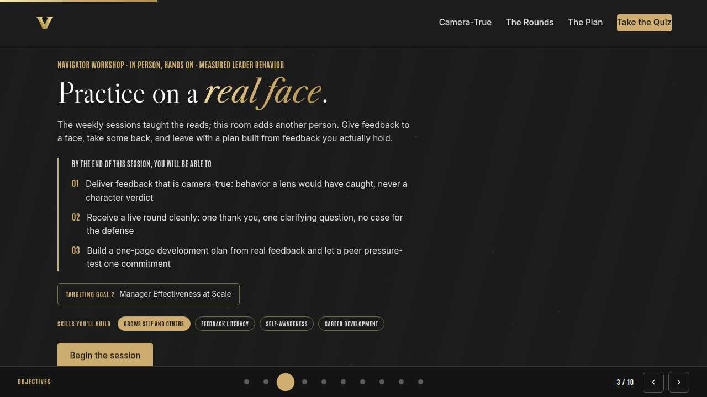
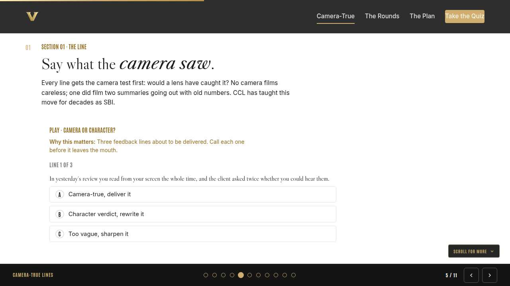
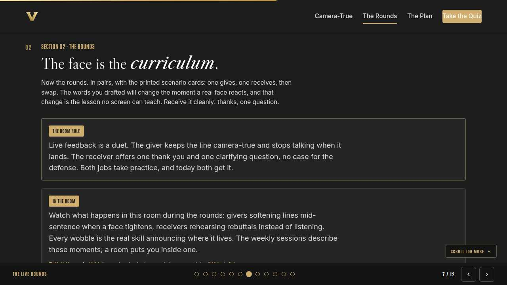
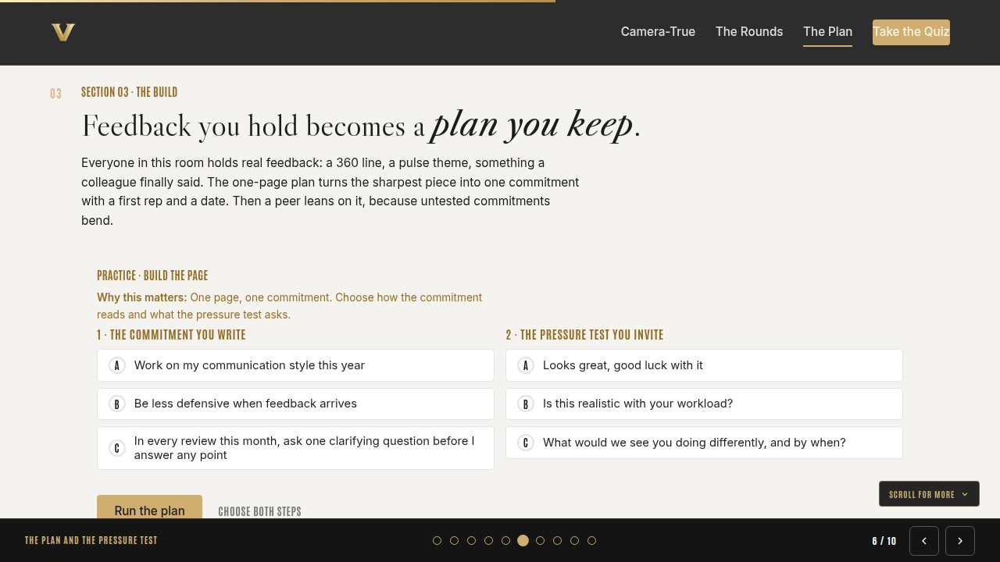
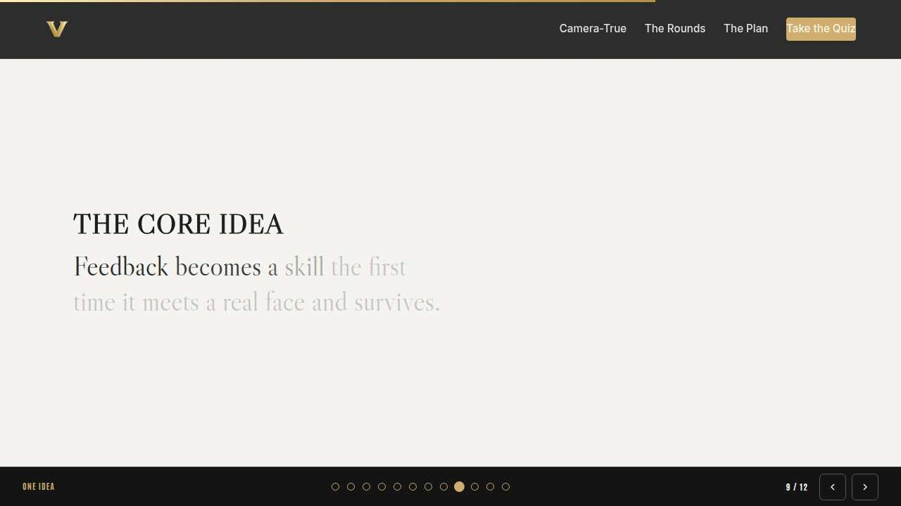
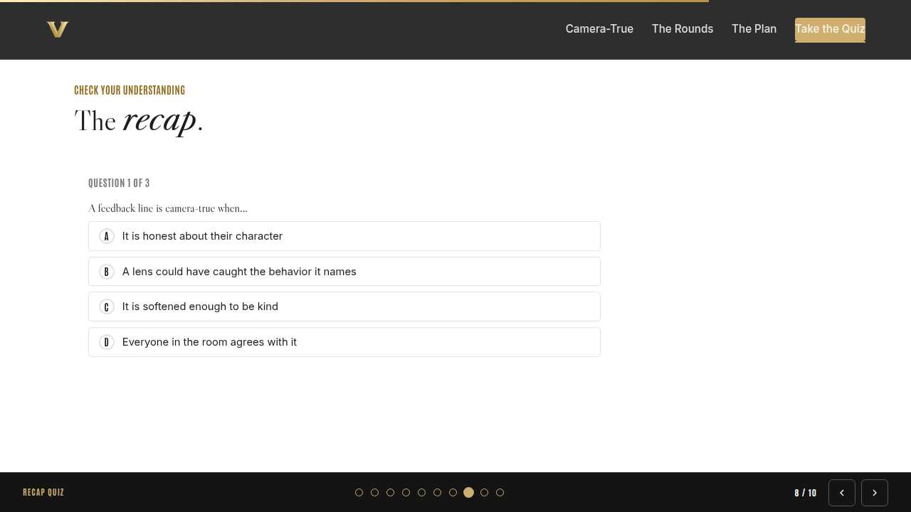
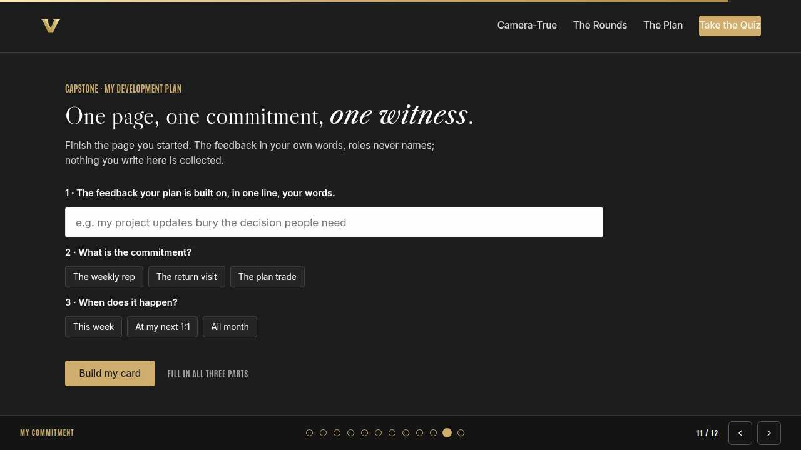

Vanderbilt · Anchor's Edge · ATD facilitator guide · print edition
The Practice Room, the facilitator guide

Run of show
| Screen | Full (min) | Core (min) |
|---|---|---|
| Welcome / QR | 3 | 2 |
| Why we're here | 4 | 2 |
| Objectives | 3 | 2 |
| Camera-true lines | 9 | 6 |
| The live rounds | 11 | 8 |
| The plan and the pressure test | 9 | 6 |
| The core idea | 2 | 1 |
| Recap quiz | 5 | 4 |
| Capstone commitment | 6 | 3 |
| Closing | 2 | 2 |
| Total | 54 | 36 |
The goal this month serves
Goal 2, Manager Effectiveness at Scale.
Audience
All Vanderbilt staff, in person with their navigator; nobody is assumed to manage anyone. Works for 8 to 30 at tables of 4 to 6, with printed scenario cards and the one-page plan worksheet on every table. Best after the month's weekly sessions, and it stands alone for anyone who missed them.
Room setup
In person, navigator led: projector plus presenter device, tables that pair easily, learners on their own devices via the welcome-slide QR. Nothing typed into the deck is saved or sent.
Materials
- Meeting platform with screen share and breakout rooms; deck link ready to paste in chat
- Facilitator machine with the facilitator edition open; notifications off
- Learners on their own devices with the learner link
- Chat open for share-outs; the capstone copy button pastes there cleanly
A week before
- Run the learner edition start to finish and do every interaction honestly; you will demo at least one live.
- Read this month's theme page on the Anchor's Edge dashboard so the goal tie-in is fluent.
- Send the invite with the learner link and one line on what to bring.
The day before
- Test screen share with the facilitator edition; confirm the notes rail is readable.
- Open the learner link on a second device; the QR must land there.
- Run the section interactions once so you can drive them without reading.
30 minutes before
- Welcome slide up as people join; link pasted in chat.
- Close every other tab; silence the machine.
- Breakout rooms pre-configured in pairs.
When things go sideways
If The projector or room screen fails: The workshop survives it: the rounds, the cards, and the page are all paper and voices. Read the interactions aloud from your own device via the welcome QR and keep the rounds moving.
If The room count is odd and a pair can't form: Make one trio: two givers take turns, one receiver, then rotate the odd role each round. Trios also give shy participants a softer first round.
If Someone uses a round to relitigate real feedback about a real colleague: Protect the room warmly: 'Hold that one for a private conversation. In here, scenario cards and roles, never names.' Then restart the round on the card.
If A live round lands hard and a participant goes quiet: Offer the exit ramp: sit out one rotation as an observer with a job, noticing duet moves to report back. Check in privately at the next transition.
Tough questions, ready answers
Q: Isn't role-play artificial? Real feedback is messier.
It is, and that is the design. Musicians rehearse slower than the concert. The camera test, the clean receipt, and the pressure question are exactly the parts that survive contact with mess, and this room is where they become reflex instead of theory.
Q: I'm not a manager. Whose behavior is this month measuring, if not mine?
The measurement reads managers; the muscle belongs to everyone. Every career runs on feedback given and received well, and a development plan is how anyone, at any level, turns a true sentence into a visible change. The room was full for a reason.
Q: Can I use an AI tool to tidy up my development plan?
Run the light. A plan about your own behavior in generic terms is fine in an approved VU tool. The moment it quotes feedback about identifiable colleagues, that part is private information about people: red, never. And keep the commitment in your own voice; your peer pressure-tested those words, and the next feedback round will too.
Copy-paste templates
Pre-work invite (paste into the calendar invite)
Subject: In person this month: feedback, practiced on real faces, with your navigator. Bring one piece of real feedback you have received this year, held privately; you will never be asked to read it aloud. Scenario cards, worksheets, and brave company provided. Nothing you write is collected.
7-day pulse (send one week after)
Subject: Did the first rep run? Three lines, reply whenever: 1) Did the first rep on your plan happen? 2) What did the pressure test change before you left? 3) Who holds your date, and have they asked yet?
After the session
Seven days out, send the pulse: 'Did the first rep on your plan run? What did the pressure test change? Who holds your date?' Count of plans with a completed first rep is the month's Level 3 signal.
Welcome / QR Full 3 min · Core 2
Get everyone into the deck on their own device and set the tone: 90 minutes, in person, hands on.
Say
“Welcome to the Navigator Workshop. Scan the code so this session runs on your device too. 90 minutes, one focus: The feedback role-play and development-plan build, live and in person.”
Do
- Slide projected as people arrive; phones up before you speak.
- State the norm once: type into your own device, nothing you enter is saved or sent.
Watch for: People lurking without the deck open. The interactions only land if the deck is on their screen.
Transition: “Before the topic, thirty seconds on why Vanderbilt is asking for this hour.”
Why we're here Full 4 min · Core 2
Anchor the session in the Chancellor's charge and name the goal this month serves, inside one minute.
Say
“One sentence from the Chancellor sits over everything we do: Vanderbilt will define the great university of the 21st Century and be it. A room practicing how to say the true thing kindly, and hear it without armor, is Exceptional Core Operations rehearsing for the great university of the 21st Century. This month serves Goal 2, Manager Effectiveness at Scale.”
Do
- Read the mission line slowly, once; name the goal, once.
- No discussion here; the whole slide is under a minute.
Transition: “Here is what you will be able to do in 90 minutes.”

Objectives Full 3 min · Core 2
Set the contract for the session in about a minute; this slide is also the roadmap.
Say
“By the end of this session you will be able to: deliver feedback that is camera-true: behavior a lens would have caught, never a character verdict; receive a live round cleanly: one thank you, one clarifying question, no case for the defense; build a one-page development plan from real feedback and let a peer pressure-test one commitment. We take them in order, and each one has something to practice.”
Do
- Read the three objectives briskly; they double as the agenda.
- Point at the goal chip once, then move.
Transition: “First objective.”

Camera-true lines Full 9 min · Core 6
Install the camera test and get every participant rewriting verdicts into filmable behavior.
Say
“Every feedback disaster you have ever watched started as a character verdict: you're careless, you're negative, you're not strategic. Nobody can fix a verdict. So the first skill today is a rewrite. The Center for Creative Leadership has taught this for decades as SBI, situation, behavior, impact, and the camera test is the same discipline with a lens on it. If a camera in the corner couldn't have filmed it, it isn't ready to say. We calibrate on three lines together, then you rewrite real ones at your table.”
Do
- Run Camera or character? on learner devices first, so the test is shared before anyone writes.
- Run the pass-left rewrite at each table; walk the room and listen for a strong before-and-after.
- Read one verdict-to-camera rewrite aloud for the room and name what changed: a when, a what, a consequence.
Ask
“What gets lost when the verdict becomes a camera line?”
Expect:
- The sting, mostly
- Some say the bigger pattern goes missing
- A few worry it feels nitpicky
Respond: The pattern isn't lost; it's earned. Three camera-true lines make a pattern nobody can argue with. One verdict makes an argument nobody can win.
Debrief: The camera test travels: it works on feedback you give, feedback you receive, and, later today, the commitment you write.
Watch for: Tables writing polished insults and calling them honest. Camera-true includes kind: behavior, a when, and no adjectives about the person.
Transition: “Lines drafted. Now they meet faces.”
Core path: Core: run the trainer, then one rewrite per table instead of the full pass-left round.

The live rounds Full 11 min · Core 8
Run rotating give-and-receive rounds with scenario cards, and debrief the duet live.
Say
“This is the part no virtual session can do. You will give a camera-true line to a person who reacts, and receive one from a person watching your face while they say it. Use the scenario cards, roles never names. Receivers, your whole job is one thank you and one clarifying question. Givers, when the line lands, stop talking. The silence after a true sentence is where the work happens; don't rescue anyone from it.”
Do
- Pair people across tables for the first round so nobody practices on a close colleague.
- Run two rounds with a swap, then rotate pairs for a third; walk the room and listen for defense-building.
- Show the room rule card and run the discussion prompt between rounds; take voices on what bodies did.
Ask
“Receivers: what did your hands, face, or breath do when the line landed?”
Expect:
- Laughed or smiled to soften it
- Started composing a reply mid-line
- A few felt genuine relief at a clean, specific line
Respond: All human, and all visible from the other chair. Naming the reflex out loud is what gives you a choice about it next time.
Debrief: The duet holds when both jobs stay small: a true line delivered once, a receipt of thanks and one question.
Watch for: Pairs drifting into real grievances about real colleagues. Re-anchor warmly to the scenario cards: this room practices the skill, never the case.
Transition: “You have given and received. Now the feedback you actually hold gets its page.”
Core path: Core: two rounds instead of three; debrief once, at the end of the second.

The plan and the pressure test Full 9 min · Core 6
Convert real feedback into a one-page plan with one filmable commitment, pressure-tested by a peer.
Say
“Last build. Think of the sharpest real feedback you hold from this year: a 360 line, a pulse theme, the sentence a colleague finally said. It goes at the top of the page in your own words. Under it, one commitment that passes the camera test, one first rep, one date. Then you trade pages, and your peer asks the only pressure-test question that matters: what would we see you doing differently, and by when?”
Do
- Run Build the page on learner devices before the writing, so the strong pattern is loaded.
- Quiet writing time on the worksheet; walk the room and nudge vague commitments toward filmable ones.
- Run the page trade and pressure test in pairs; revisions happen at the table, out loud.
Ask
“What did the pressure test do to your commitment?”
Expect:
- Shrank it to something checkable
- Added the date it was avoiding
- One or two will say it survived intact
Respond: Surviving intact counts, if the peer really leaned. A commitment that answers the camera question at this table will answer it anywhere.
Debrief: One page: the feedback in your words, one filmable commitment, one rep, one date, one peer who knows all four.
Watch for: Plans built on feedback the person disputes. Redirect to feedback they own; a plan argues best from evidence its writer believes.
Transition: “Recap, then the page becomes a card and goes home.”
Core path: Core: skip the builder walkthrough; go straight to the page and the trade.

The core idea Full 2 min · Core 1
Land the one sentence the session exists to install.
Say
“If you keep one sentence from today, this is it. Read it once, out loud: Practice the line out loud, receive it cleanly, and leave with one filmable commitment.”
Do
- Pause two beats after reading; the word animation carries it.
Transition: “The recap makes it stick.”
Core path: Core: pass through in stride; the sentence reads itself.

Recap quiz Full 5 min · Core 4
Score the learning while it is fresh; wrong answers are teaching moments, not failures.
Say
“Three questions, on your own screen. Answer honestly; the explanations are where the learning sticks.”
Do
- Give the room 90 seconds to run it individually.
- Ask for a show of results in chat: how many got 3 of 3?
- Read out the explanation for whichever question drew the most misses.
Watch for: Rushing past the why lines. The explanations carry the teaching.
Transition: “Now point it at your real week.”

Capstone commitment Full 6 min · Core 3
Convert the session into one named, dated action per person.
Say
“Finish the card: the feedback in one line, your own words, roles never names. Then the commitment, the first rep, the window, and who holds the date. Copy it onto your phone or fold the page into your bag; the peer who tested it knows to ask. Quiet writing time, then we close.”
Do
- Two quiet minutes; everyone builds their own card.
- Invite two or three volunteers to read their card aloud or paste it in chat.
- Remind: copy the card somewhere you will see it this week.
Watch for: Vague entries. Nudge for a name-able situation and a real date.
Transition: “Last slide.”
Closing Full 2 min · Core 2
End with the next step and where this thread continues.
Say
“This room just did what the whole month is about: behavior you can see. Monday showed managers how the standard reads their own evidence, Tuesday opened the tooling that protects everyone's signal, and Thursday works the blind spot that a room like this one closes. Your page is those sessions with a date on it. When you want a rehearsal between real rounds, this month's LinkedIn Learning course, Giving and Receiving Feedback, is there; optional, never homework. Go run the first rep, and let the next feedback season find you already moving.”
Do
- Point at the next-step card; one sentence.
- Name the rest of the week's rhythm: the other sessions echo this month's theme.
Generated from facilitator/notes.json. The on-screen facilitator edition lives at ./ alongside this guide.